The First Few Letters:
The Journey Begins
When I thought to write to Dave, I had no idea what a difficult undertaking it would become. First of all, you have to have a purpose for writing. Well, that's what I was told. Also, I was advised, you should know who else might read the letter and their sensitivity to certain word sounds, so you don't offend them.
I spent nearly a day deciding why I was writing to Dave, and came up with three valid reasons:
- I was 20 years old, and had less to do with my life than the Bradys
- I wanted to be able to claim Dave as a personal friend on my Friends and Family® account
- I wanted to be Dave's head writer (this I'll get to later)
The part about other readers I ignored, figuring if other viewers were like me, they wouldn't have the energy to come find me even if I had offended them.
Once I determined my motivation, I had the fodder for my first few letters. I felt that, unlike many who wrote to Dave, I should begin our friendship on a more formal note. Therefore the first few, as you'll see, appear somewhat uncertain and strained. I feel, however, that they offer a good introduction to Mr. Entertainment.
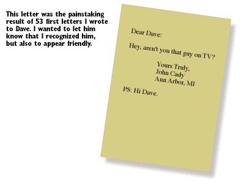
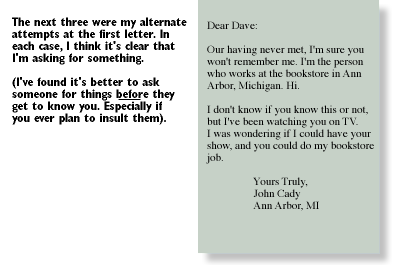
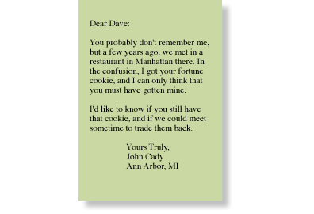
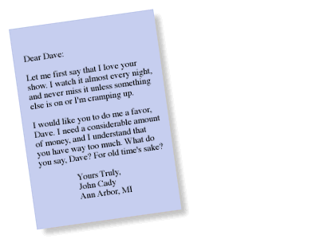
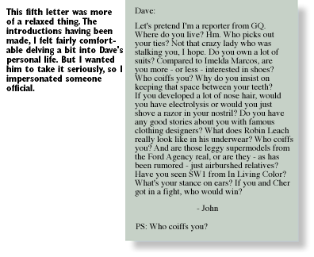
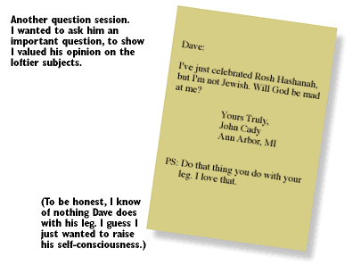
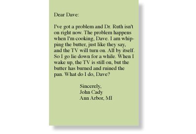
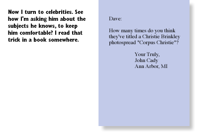
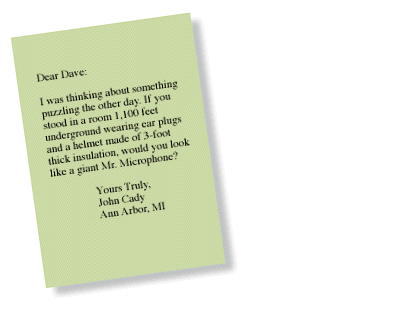
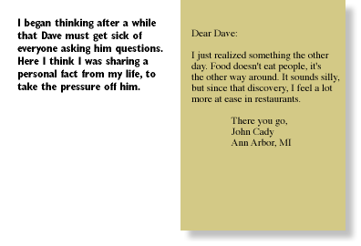
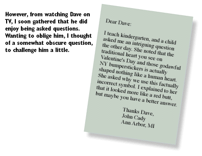
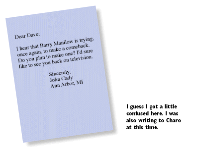
or back to the table of contents
© 1993-1995 John Cady and the Lounge Life Press